Documentales
Todo cambia desde el momento en que ves alguno de estos documentales de veganísmo. Abrirte a la información es el primer paso para dejar de ver a los veganos como radicales y empezar a entender los motivos que les han llevado a tomar la decisión de dejar de comer animales y sus derivados.
Gracias a la información cada vez se estigmatiza menos a los veganos y nacen más adeptos a este estilo de vida.
Earthlings (Terrícolas)
Esclarecedor documental de 2005, narrado por el actor y activista animalista Joaquin Phoenix (por supuesto, vegano) con música de Moby (también vegano). Earthlings muestra cómo los humanos utilizan actualmente a los animales de otras especies, se utilizan cámaras ocultas e imágenes de las prácticas cotidianas de algunas de las más grandes industrias del mundo que se enriquecen con el sufrimiento animal de por medio. Este documental inspiró a un sin fin de personas a dejar de comer carne y a ver con otros ojos la industria ganadera.
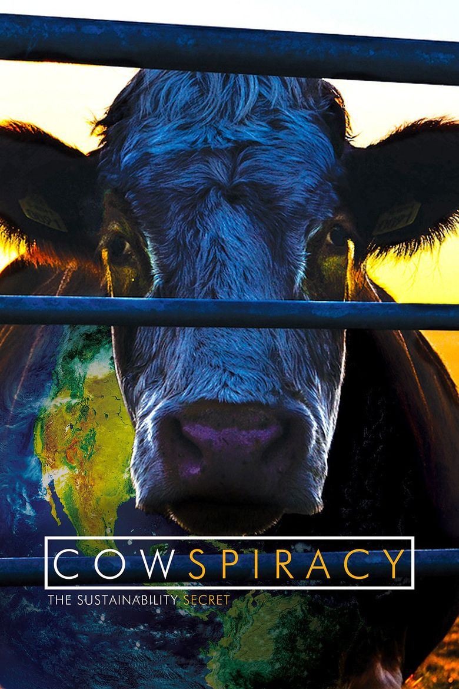
Cowspiracy
El documental 'Cowspiracy' es un intenso viaje, con pinceladas de humor, de un esperanzado ecologista en su búsqueda de la auténtica solución a los problemas medioambientales más urgentes, al igual que la búsqueda del verdadero camino a la sostenibilidad, lo cual nos lleva a enfrentarnos a una de las fuerzas destructivas más grande a la que se enfrenta hoy nuestro planeta, el ser humano y la industria intensiva ganadera.
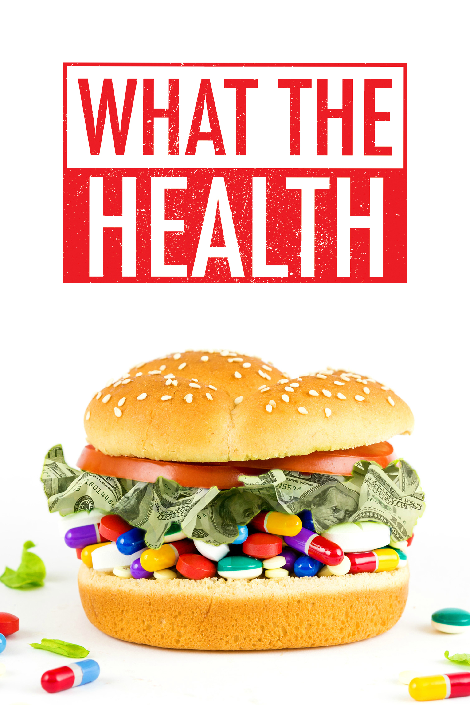
What the Healt
De los creadores de 'Cowspiracy' el documental 'What the health' pretende desenmascarar la realidad sobre la industria cárnica y el consumo de sus productos. Dirigido por el hipocondríaco Kip Andersen vincula los problemas de salud con el consumo de carne y alimentos procedentes del mundo animal.
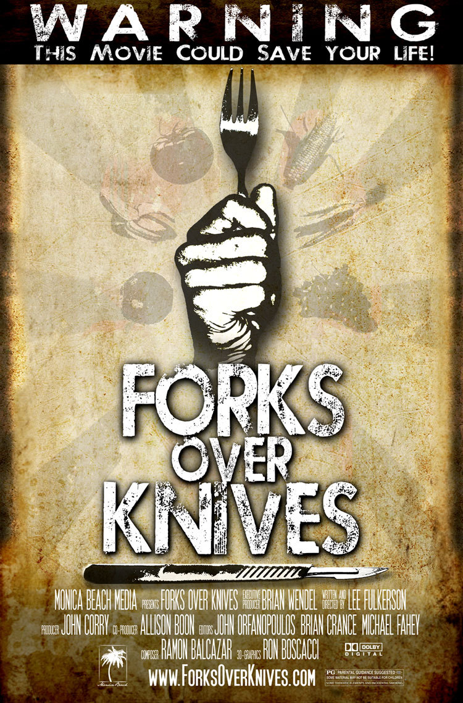
Forks Over Knives (Tenedores sobre cuchillos)
Este documental muestra los beneficios de una dieta a base de vegetales, dieta que reduce el riesgo de padecer alguna enfermedad cardiovascular, al igual que reduce el riesgo de padecer cáncer o diabetes. Forks over knives, en general habla de que está comprobado que una dieta vegana o vegetariana disminuye notablemente el riesgo de desarrollar alguna enfermedad crónica.
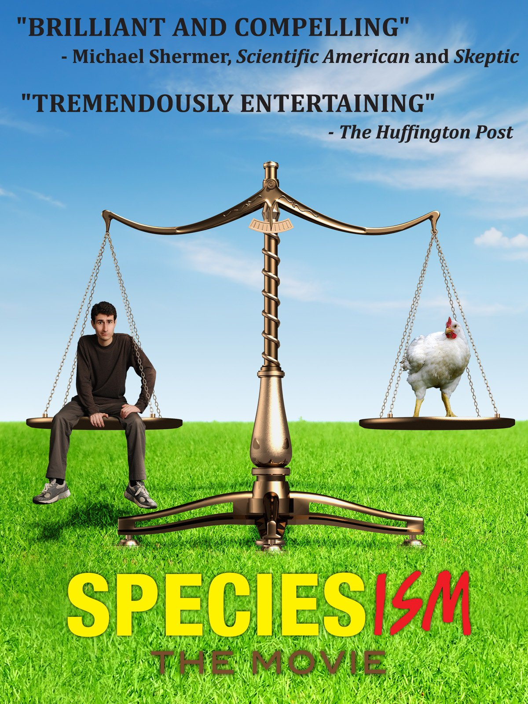
Speciesism (Especísmo)
Esta película aborda los conceptos básicos del libro de Peter Singer, Liberación Animal, con un toque más desenfadado. ‘Speciesism’ habla de la ética de los intereses del ser humano frente a la ética de los intereses por los derechos de los animales. Peter Singer es un conocido filósofo utilitarista interesado en el trato ético aplicado a los animales.
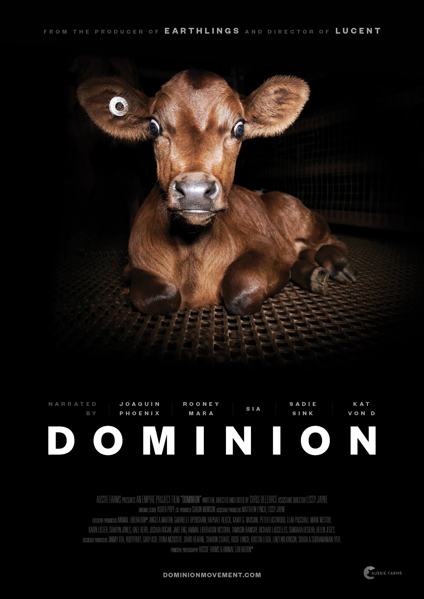
Dominion
Documental que expone la realidad de la ganadería cuestionando la dominación humana sobre otros animales utilizando drones, cámaras ocultas y de mano para exponer las oscuras entrañas de la ganadería moderna, cuestionando la moralidad y validez del dominio de la humanidad sobre el reino animal. Si bien se centra principalmente en los animales utilizados para la alimentación, también explora otras formas en que los animales son explotados y abusados por los seres humanos, incluyendo la ropa, el entretenimiento y la investigación.
Narrado por Joaquin Phoenix, Rooney Mara, Sia, Sadie Sink y Kat Von D, y coproducido por el creador de Earthlings Shaun Monson. Filmado en Australia, con un mensaje global.
Libros
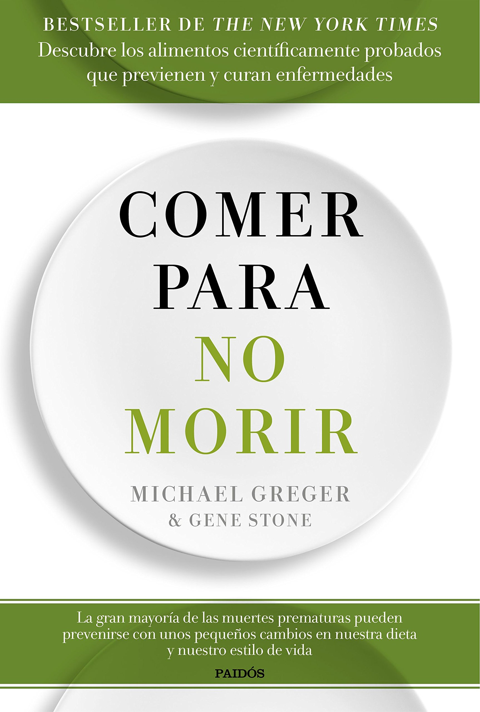
Comer para no morir, Michael Greger
La gran mayoría de muertes prematuras podrían prevenirse con tan solo llevar a cabo sencillos cambios en la dieta y en el estilo de vida. En Comer para no morir, el doctor Michael Greger, experto en nutrición y médico de fama mundial, analiza las quince primeras causas de muerte (enfermedades cardiovasculares, distintos tipos de cáncer, diabetes, enfermedad de Parkinson o hipertensión arterial, entre otras) y explica cómo algunos cambios en la alimentación y el estilo de vida pueden ser más eficaces que las pastillas u otros tratamientos farmacológicos y quirúrgicos, y de este modo vivir una vida más saludable.
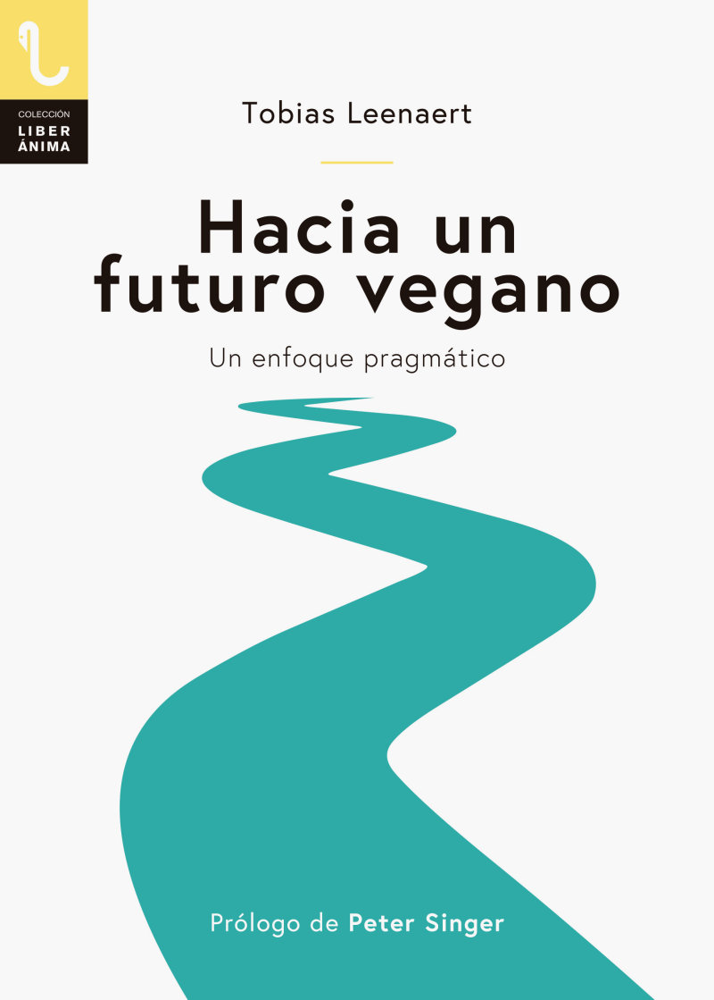
Hacia un Futuro Vegano, Tobias Leenaert
En este libro que invita a la reflexión, Tobias Leenaert se aleja de los caminos más convencionales de la defensa de los animales y aborda las estrategias, los objetivos y las herramientas comunicativas del movimiento vegano y animalista desde un nuevo prisma. Tobias argumenta que, dada la situación actual, en esta sociedad tan dependiente del uso de animales, es conveniente tener un enfoque muy pragmático. Hacia un futuro veganocontiene muchas ideas y perspectivas útiles para activistas, tanto nuevos como experimentados, líderes de organizaciones e, incluso, emprendedores. «Un libro indispensable para todos aquellos que busquen maximizar su influencia para hacer del mundo un lugar mejor para los animales». —Melanie Joy, doctora en Psicología Social, autora del best seller Por qué amamos a los perros, nos comemos a los cerdos y nos vestimos con las vacas
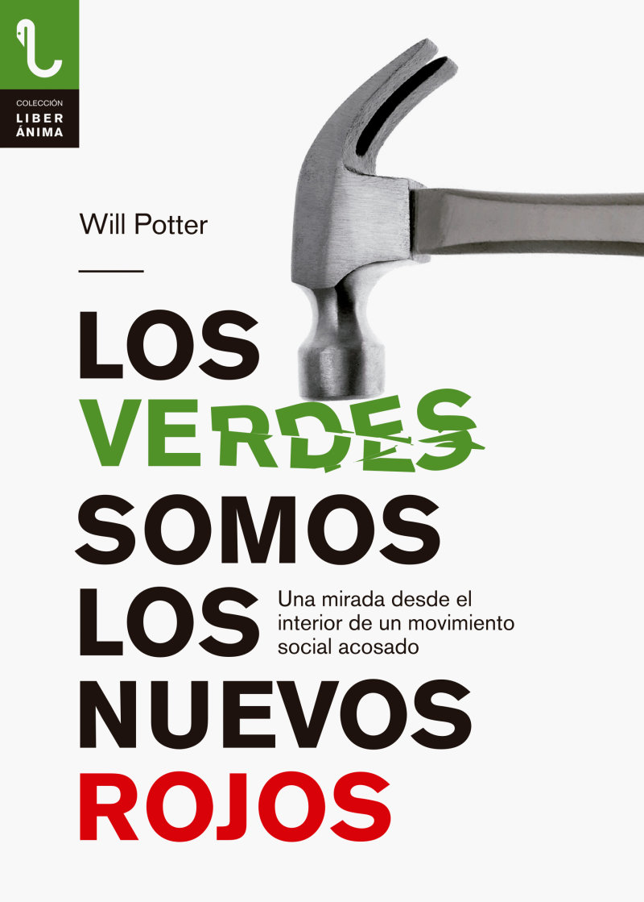
Los verdes somos los nuevos rojos, Will Potter
En una época en la que parece que todo el mundo se está volviendo verde, la mayoría de las personas no son conscientes de que el FBI está utilizando los recursos destinados a acabar con el terrorismo para perseguir a activistas por el medio ambiente y por los derechos de los animales.
Se utiliza a los tribunales para ampliar los límites convencionales de lo que constituye el término terrorismo y para golpear a los activistas no violentos con condenas desmesuradas. Algunos han tenido que enfrentarse a cargos de terrorismo por el simple hecho de pintar eslóganes con tiza en la acera.
Al igual que el llamado Temor rojo en los Estados Unidos, este «Temor verde» consiste en la intimidación, mediante el uso de la palabra ecoterrorista para impulsar una campaña política, inculcar el miedo y silenciar la disconformidad. Este libro es una visita guiada por el mundo del activismo radical que cuenta la historia de cómo privan a personas comunes del derecho de defender lo que creen.
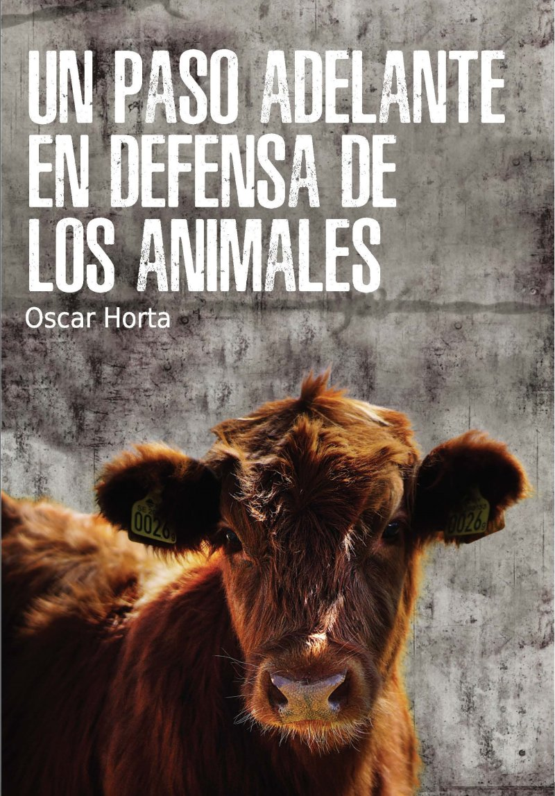
Un paso adelante en defensa de los animales, Oscar Horta
Durante mucho tiempo se ha pensado que los animales son poco más que cosas a nuestro servicio. Cosas que podemos usar como nos apetezca, y por las que no nos tenemos que preocupar. Pero hoy esta idea está empezando a saltar por los aires. Cada vez más personas en todo el mundo opinan de forma distinta. Es una ola que no deja de crecer. Cada vez más y más gente sabe que los animales son seres que sienten y sufren, y que por ello deberíamos respetarlos y defenderlos. ¿Cuáles son los motivos para afirmar eso? ¿Por qué tendría que preocuparnos lo que les pasa a los animales? ¿Qué podemos hacer por ellos, y qué podemos dejar de hacer contra ellos?
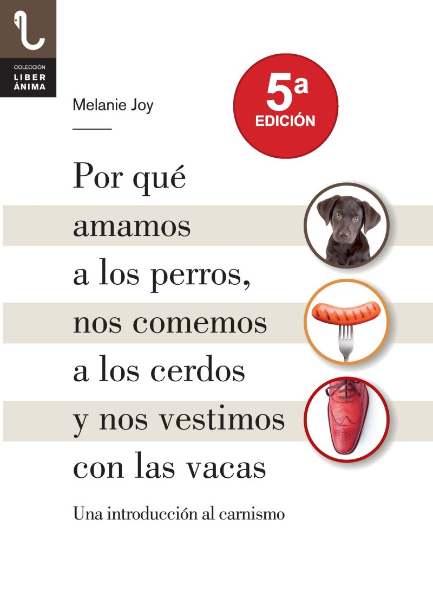
¿Por qué amamos a los perros, nos comemos a los cerdos y nos vestimos con las vacas?, Melanie Joy
Esta obra revolucionaria explora por qué en nuestra cultura nos mostramos tan dispuestos a comer algunos animales mientras que ni se nos pasa por la cabeza comernos a otros. Melanie Joy, psicóloga social, afirma que este fenómeno se explica por un proceso de negación. Hacemos caso omiso de los hechos: de la capacidad de conciencia de los animales, de su capacidad para sentir dolor, de las crueles prácticas ganaderas, de que no necesitamos comer carne y de que, por lo general, sin ella viviríamos más y mejor.
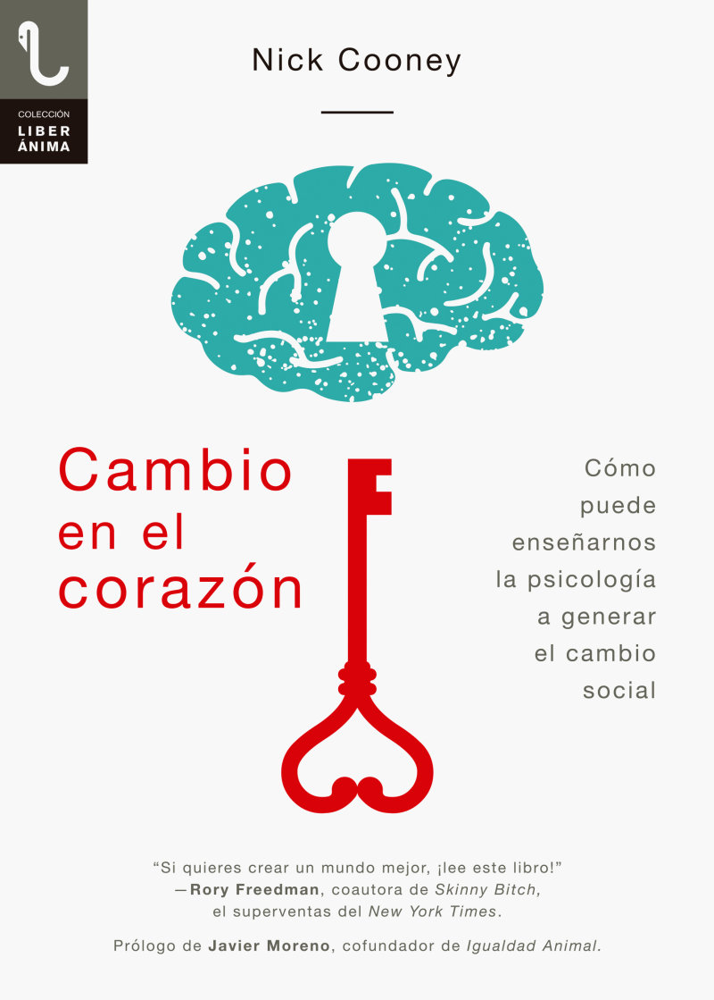
Cambio en el corazón, Nick Cooney
¿Deberían los manifestantes contrarios a la guerra emplear imágenes contundentes para que el público apoye su causa, o este tipo de material provoca rechazo? ¿Tendrían las organizaciones por el medio ambiente que pedir la adopción de hábitos sencillos (como el uso de bombillas de bajo consumo), o resultaría más conveniente demandar grandes cambios personales (como dejar de utilizar el coche)? ¿Por qué la mayoría de los consumidores afirman oponerse a las crueles prácticas de las granjas industriales y a los talleres de explotación laboral pero siguen comprando productos provenientes de tales lugares? ¿Cómo pueden conseguir las organizaciones sin ánimo de lucro que más personas accedan a realizar voluntariado, donar, reciclar, apoyar los derechos de los homosexuales, hacerse vegetariano, ahorrar energía o de llevar a cabo algún otro cambio positivo?
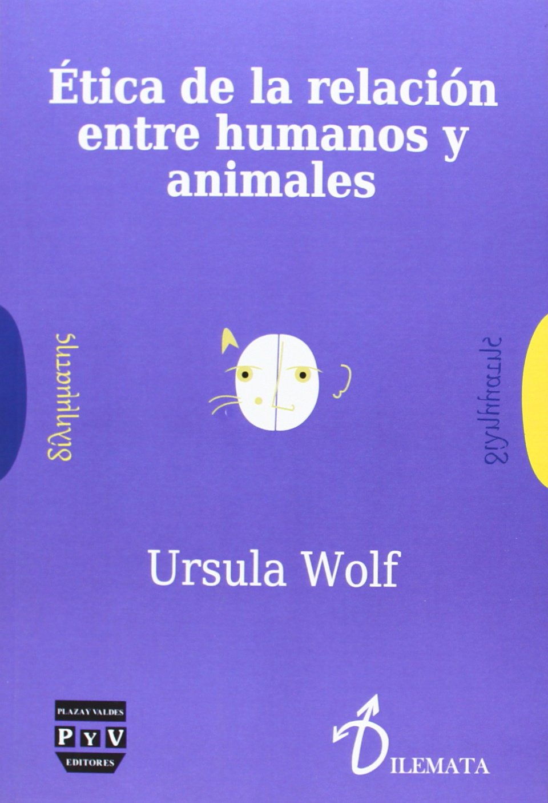
Ética de la relación entre humanos y animales, Úrsula Wolf
Aunque exista un amplio consenso en nuestro deber para con el bienestar de los animales, en la práctica se les sigue utilizando a gran escala para satisfacer los intereses humanos sometiéndolos por millones a un inmenso sufrimiento. Este libro analiza la inconsistencia entre la aspiración moral y práctica, así como la controversia entre distintos puntos de vista morales, y muestra cómo las teorías morales se comportan con respecto a convicciones concretas. Se hace un recorrido crítico a través de las más importantes teorías de la ética y propone una concepción más fundamental que exigiría la observación del bienestar de todos los seres sintientes.
Apps para Android e iOS
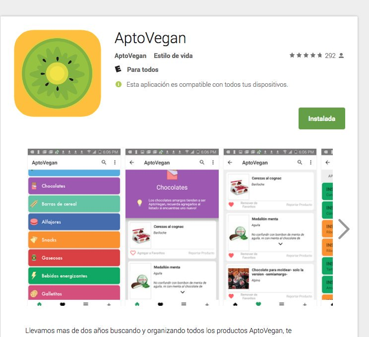
AptoVegan
No importa si eres un vegan experto o recién estás comenzando, encontrar productos en el supermercado será mucho más fácil usando AptoVegan App. Listado de productos aptos para veganos en el mercado. Y extenso listado de los ingredientes que se suelen usar en productos alimenticios y de cuidado personal que no sabemos si tienen o no componentes de origen animal.
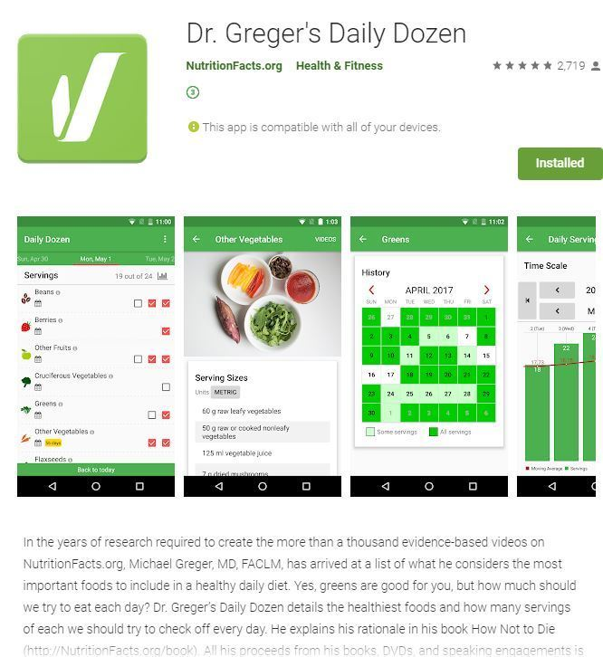
Daily Dozen
En los años de investigación necesarios para crear las más de mil videos basados en la evidencia sobre NutritionFacts.org, Michael Greger, ha llegado a una lista de lo que considera los alimentos más importantes para incluir en una dieta diaria saludable. ¿Cuánto de cada alimento deberíamos tratar de comer cada día? Daily Dozen del Dr. Greger detalla los alimentos más sanos y cuántas porciones de cada uno debemos tratar de marcar todos los días. Explica su razón de ser en su libro Comer para no morir.